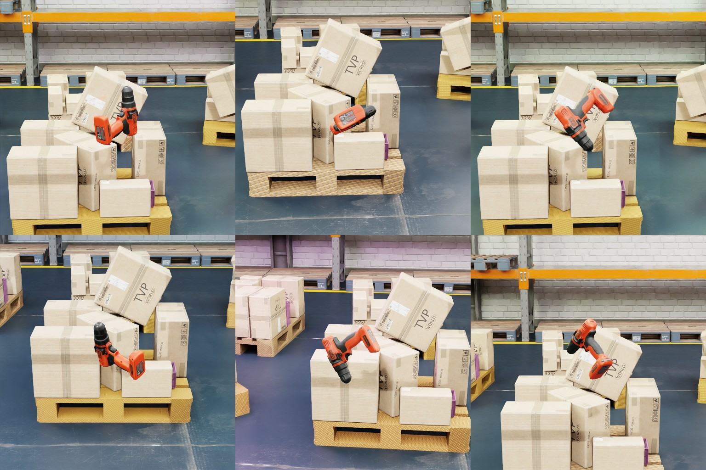
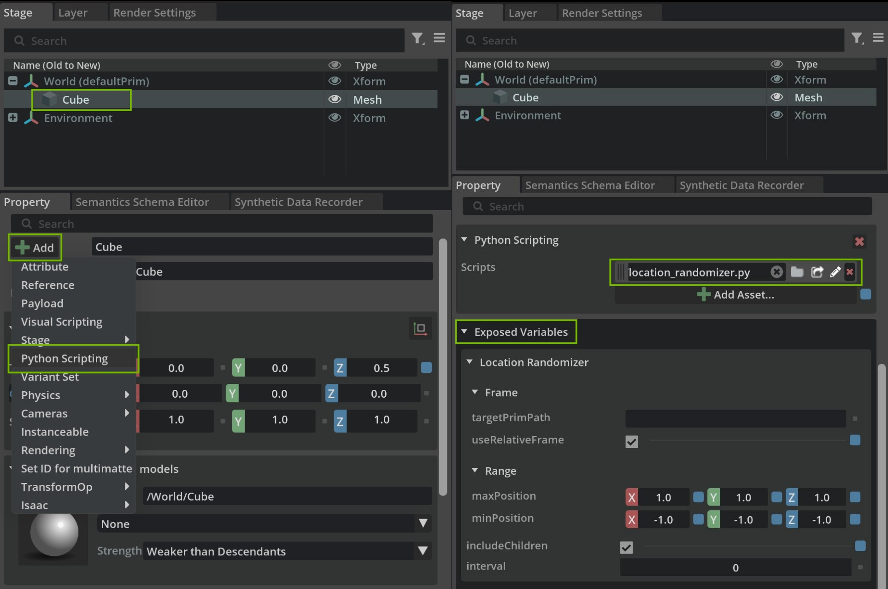

Modular Behavior Scripting#
Overview#
This tutorial introduces the isaacsim.replicator.behavior extension and walks through its modular behavior scripts for Isaac Sim Replicator synthetic data generation (SDG). Built on top of the Python Scripting Component, these behaviors attach directly to prims in a USD stage and act as randomizers or custom smart-asset behaviors that are reusable, shareable, and easy to modify.
The behavior functionality ships as two extensions:
isaacsim.replicator.behavior— the core extension containing the behavior scripts. It has no UI dependency and runs in headless mode.isaacsim.replicator.behavior.ui— the UI extension that renders exposed variables in the Property panel.
The two extensions communicate through a carb event, so the core can run without the UI loaded. See Core and UI extension split for details.
Find the bundled behavior scripts under:
/exts/isaacsim.replicator.behavior/isaacsim/replicator/behavior/behaviors/*
Learning Objectives#
After completing this tutorial, you will understand how to:
Use pre-built behavior scripts for common synthetic data generation tasks, including:
Location Randomizer - randomizes prim positions within specified bounds for object placement variety
Rotation Randomizer - applies random rotations to enhance orientation diversity in datasets
Look At Behavior - makes prims continuously face target locations or other prims for camera tracking
Light Randomizer - randomizes light properties like color and intensity to simulate different lighting conditions
Texture Randomizer - applies random textures to materials for increased visual variety
Volume Stack Randomizer - uses physics simulation to randomly stack objects for realistic arrangements
Understand behavior script architecture - how modular Python scripts attach to prims and can be customized through exposed USD attributes, with configurable parameters like update intervals and randomization ranges
Control behavior execution - configure behaviors to run on timeline events (start, update, stop) or trigger them independently using custom events for advanced workflows
Create custom behavior scripts - develop your own behaviors using the provided templates and base classes for specific synthetic data generation needs
Build complex SDG pipelines - combine multiple behaviors, simulations, and events to create sophisticated data generation workflows, such as physics-based object stacking followed by automated data capture
Prerequisites#
Before starting, make sure you are familiar with:
USD and Isaac Sim APIs for creating and manipulating USD stages
Python Scripting Component in Isaac Sim
The timeline and custom events system
omni.replicator and its Isaac Sim tutorials for synthetic data generation
Writers and annotators for data capture
Running scripts using the Script Editor to setup and run pipelines
Note
To attach behavior scripts to prims from the UI (Property panel > Add > Python Scripting), enable the omni.behavior.scripting.ui extension from Window > Extensions. This extension ships the Python Scripting Component UI and is not enabled by default. The core behaviors in isaacsim.replicator.behavior run without it, which is useful for headless SDG pipelines.
Demonstration#
The example section provides a demonstration of how to use the behavior scripts to create a custom synthetic data generation pipeline:

{kind=link}

Behavior scripts#
Behavior scripts are modular Python scripts attached to prims in a USD stage. By default, they respond to timeline events — start, pause, stop, and update — and define the randomization or custom logic applied to the prim during simulation or data generation.
Attaching scripts directly to prims embeds the behavior in the USD itself and gives you:
Modularity. Attach, detach, or swap scripts on a prim without changing core logic.
Shareability. Embed behaviors within assets and reuse them across projects or stages.
Configurability. Expose variables as USD attributes and edit them without modifying source.
Persistence. Scripts live on the prim and travel with the stage, so you can version them alongside it.
Reusability and encapsulation. Write a behavior once and reuse it across prims and scenes with minimal external dependencies.

Exposing variables through USD attributes#
Each behavior script exposes its input parameters as namespaced USD attributes on the prim that carries the script. This lets you edit behavior parameters directly from the Property panel — or programmatically through the USD API — without modifying the script source.
Exposing variables as USD attributes provides three benefits:
Customization. Tune parameters such as target locations, ranges, or seeds per prim instance.
Interactivity. Edit values in the UI and observe the effect on the next update.
Consistency. Every behavior presents the same editing interface regardless of its internal logic.
The scripts use the USD API to create custom attributes under a shared namespace (exposedVar:<behaviorNamespace>:<attrName>) and read them back during execution to drive their logic.
Core and UI extension split#
The behavior functionality is split across two extensions:
isaacsim.replicator.behavior— the core extension. It defines the behavior scripts, creates and removes the exposed USD attributes, and has no UI dependency. This lets you run the behaviors in headless mode (for example, during automated SDG pipelines).isaacsim.replicator.behavior.ui— the UI extension. It registers anExposedVariablesPropertyWidgetwith the Property panel that automatically renders the exposed variables as editable fields.
The two extensions communicate through a single carb event, isaacsim.replicator.behavior.EXPOSED_VARS_CHANGED:
The core extension dispatches the event whenever it creates or removes exposed variables on a prim.
The UI extension subscribes to the event at startup and rebuilds the Property panel when it fires.
This event-based decoupling allows the core extension to run without the UI loaded, and the UI extension to refresh on demand without the core importing any UI modules.
Example of Exposed Variables Definition:
VARIABLES_TO_EXPOSE = [
{
"attr_name": "targetLocation",
"attr_type": Sdf.ValueTypeNames.Vector3d,
"default_value": Gf.Vec3d(0.0, 0.0, 0.0),
"doc": "The 3D vector specifying the location to look at.",
},
{
"attr_name": "targetPrimPath",
"attr_type": Sdf.ValueTypeNames.String,
"default_value": "",
"doc": "The path of the target prim to look at. If specified, it has priority over the target location.",
},
# Additional variables...
]
Custom event-based behavior scripts#
Timeline-driven behaviors are convenient, but some workflows need to run independently of the simulation clock — for example, pre-simulation setup, one-shot scene preparation, or sequences that must complete before data capture begins.
Event-based scripting lets a behavior skip the default timeline hooks and instead publish and subscribe to custom events on the Omniverse event bus. This gives you:
Flexibility. Trigger behaviors on demand, decoupled from the simulation timeline.
Modularity. Orchestrate complex workflows by chaining behaviors through events.
Performance. Avoid per-frame work by running behaviors only when triggered.
The volume_stack_randomizer.py script illustrates this pattern. It uses custom events to drop, stack, and settle assets using physics before the timeline starts, so the data-capture phase runs against a deterministic initial state.
Script Examples#
In this section, various behavior scripts available in the isaacsim.replicator.behavior extension are explored. Each script provides specific functionality that can enhance synthetic data generation workflows. The scripts are designed to be modular, reusable, and customizable through exposed variables.
The folder path for the behavior scripts is:
/exts/isaacsim.replicator.behavior/isaacsim/replicator/behavior/behaviors/*
Location Randomizer#
The location_randomizer.py script randomizes the location of prims within specified bounds during runtime, providing position variability for enhanced synthetic datasets.
Purpose: Randomizes prim positions within defined bounds to create variety in object placement.
Key Features:
Position range randomization within minimum and maximum bounds
Relative positioning support using target prims as reference points
Child prim inclusion for hierarchical randomization
Configurable update intervals for performance control
Exposed Variables:
Configuration Parameters
range:minPosition (Vector3d): Minimum bounds of the random offset.
range:maxPosition (Vector3d): Maximum bounds of the random offset.
frame:useRelativeFrame (Bool): If True, preserve the prim’s initial offset (from the target prim if set, otherwise from its own starting position) and add the random offset on top. If False, the random offset is applied as an absolute position (relative to the target prim if set, otherwise to the world origin).
frame:targetPrimPath (String): Optional path to a reference prim. When set, all randomization is anchored to this prim’s world location; leave empty to randomize independently of any other prim.
includeChildren (Bool): Include child prims in randomization.
interval (UInt): Update frequency (0 = every frame).
Behavior Matrix:
The combination of frame:targetPrimPath and frame:useRelativeFrame determines how the random offset is applied:
|
|
Resulting location |
|---|---|---|
empty |
False |
|
empty |
True |
|
set |
False |
|
set |
True |
|
To make the prim’s randomization fully independent of any other prim, leave frame:targetPrimPath empty. Toggling frame:useRelativeFrame alone does not decouple the prim from the target.
Child Prim Inclusion:
Child Prim Selection Logic
def _setup(self):
include_children = self._get_exposed_variable("includeChildren")
if include_children:
self._valid_prims = [prim for prim in Usd.PrimRange(self.prim) if prim.IsA(UsdGeom.Xformable)]
elif self.prim.IsA(UsdGeom.Xformable):
self._valid_prims = [self.prim]
else:
self._valid_prims = []
carb.log_warn(f"[{self.prim_path}] No valid prims found.")
When includeChildren is True: Uses Usd.PrimRange to select all transformable descendant prims
When includeChildren is False: Only includes the assigned prim if it’s transformable
Logs warning if no valid prims are found
Randomization Logic:
Core Randomization Implementation
def _randomize_location(self, prim):
# Generate random offset within bounds
random_offset = Gf.Vec3d(
random.uniform(self._min_position[0], self._max_position[0]),
random.uniform(self._min_position[1], self._max_position[1]),
random.uniform(self._min_position[2], self._max_position[2]),
)
# Calculate final location based on target prim and relative frame settings
if self._target_prim:
target_loc = get_world_location(self._target_prim)
loc = (
target_loc + self._target_offsets[prim] + random_offset
if self._use_relative_frame
else target_loc + random_offset
)
else:
loc = self._initial_locations[prim] + random_offset if self._use_relative_frame else random_offset
self._set_location(prim, loc)
Generates a random offset within the configured
range:minPosition/range:maxPositionbounds.If
frame:targetPrimPathis set, anchors the result to the target prim’s current world location.If
frame:useRelativeFrameis True, preserves the prim’s initial offset (from the target prim if set, otherwise from its own starting position) so the random offset acts as jitter rather than an absolute placement.Writes the final location to the prim using the existing translate or transform xformOp.
Basic Setup:
Step-by-Step Configuration
Attach Script: Add location_randomizer.py to your target prim
Set Bounds: Configure range:minPosition and range:maxPosition
Enable Children: Set includeChildren to True for hierarchical randomization
Set Interval: Use interval to control update frequency
Example Configuration:
range:minPosition: (-5.0, -5.0, 0.0)
range:maxPosition: (5.0, 5.0, 2.0)
includeChildren: True
interval: 5 (updates every 5 frames)
Use Cases:
Background Objects: Randomize prop positions for scene variety. Leave
frame:targetPrimPathempty and setframe:useRelativeFrameto True to jitter each prop around its authored location.Follow a Moving Target: Keep an object’s relative offset to a moving prim. Set
frame:targetPrimPathto the target andframe:useRelativeFrameto True.Snap Near a Target: Place an object at randomized positions around a target, ignoring its original location. Set
frame:targetPrimPathto the target andframe:useRelativeFrameto False.Hierarchical Randomization: Apply randomization to object groups by enabling
includeChildren.
Rotation Randomizer#
The rotation_randomizer.py script applies random rotations to prims during runtime, enhancing orientation diversity in synthetic datasets.
Purpose: Applies random rotations to prims within specified Euler angle bounds.
Key Features:
Rotation range randomization within minimum and maximum angle bounds
Child prim inclusion for hierarchical rotation randomization
Configurable update intervals for performance optimization
Exposed Variables:
Configuration Parameters
range:minRotation (Vector3d): Minimum rotation angles in degrees (X, Y, Z)
range:maxRotation (Vector3d): Maximum rotation angles in degrees (X, Y, Z)
includeChildren (Bool): Include child prims in rotation randomization
interval (UInt): Update frequency (0 = every frame)
Child Prim Selection:
Child Prim Selection Logic
def _setup(self):
include_children = self._get_exposed_variable("includeChildren")
if include_children:
self._valid_prims = [prim for prim in Usd.PrimRange(self.prim) if prim.IsA(UsdGeom.Xformable)]
elif self.prim.IsA(UsdGeom.Xformable):
self._valid_prims = [self.prim]
else:
self._valid_prims = []
carb.log_warn(f"[{self.prim_path}] No valid prims found.")
When includeChildren is True: All transformable descendant prims are included
When includeChildren is False: Only the assigned prim is considered if transformable
Warning logged if no valid prims found
Rotation Randomization:
Core Rotation Implementation
def _randomize_rotation(self, prim):
rotation = (
Gf.Rotation(Gf.Vec3d.XAxis(), random.uniform(self._min_rotation[0], self._max_rotation[0]))
* Gf.Rotation(Gf.Vec3d.YAxis(), random.uniform(self._min_rotation[1], self._max_rotation[1]))
* Gf.Rotation(Gf.Vec3d.ZAxis(), random.uniform(self._min_rotation[2], self._max_rotation[2]))
)
set_rotation_with_ops(prim, rotation)
Generates random Euler angles within specified bounds for each axis
Creates composite rotation by multiplying X, Y, and Z axis rotations
Applies rotation using set_rotation_with_ops for proper transformation handling
Basic Setup:
Step-by-Step Configuration
Attach Script: Add rotation_randomizer.py to your target prim
Set Rotation Bounds: Configure range:minRotation and range:maxRotation
Enable Children: Set includeChildren to True for hierarchical rotation
Set Interval: Use interval to control update frequency
Example Configuration:
range:minRotation: (-180.0, -90.0, 0.0) degrees
range:maxRotation: (180.0, 90.0, 360.0) degrees
includeChildren: True
interval: 10 (updates every 10 frames)
Use Cases:
Object Variety: Randomize prop orientations for diverse scenes
Tumbling Effects: Simulate falling or floating objects
Presentation Angles: Vary object viewing angles for training data
Look At Behavior#
The look_at_behavior.py script orients prims to continuously face a specified target, ideal for camera tracking and sensor alignment.
Purpose: Orients prims to continuously face a target location or another prim.
Key Features:
Target specification using fixed coordinates or dynamic prim tracking
Up axis control for maintaining consistent orientation
Child prim inclusion for hierarchical look-at behavior
Configurable update intervals for performance control
Exposed Variables:
Configuration Parameters
targetLocation (Vector3d): Fixed 3D coordinates to look at
targetPrimPath (String): Path to target prim (overrides targetLocation)
upAxis (Vector3d): Up axis for orientation (e.g., (0, 0, 1) for +Z)
includeChildren (Bool): Include child prims in look-at behavior
interval (UInt): Update frequency (0 = every frame)
Target Prim Handling:
Target Prim Resolution
def _setup(self):
target_prim_path = self._get_exposed_variable("targetPrimPath")
if target_prim_path:
self._target_prim = self.stage.GetPrimAtPath(target_prim_path)
if not self._target_prim or not self._target_prim.IsValid() or not self._target_prim.IsA(UsdGeom.Xformable):
self._target_prim = None
carb.log_warn(f"[{self.prim_path}] Invalid target prim path: {target_prim_path}")
targetPrimPath takes precedence over targetLocation when specified
Validates target prim exists and is transformable
Logs warning if target prim is invalid
Orientation Calculation:
Look-At Rotation Implementation
def _apply_behavior(self):
target_location = self._get_target_location()
for prim in self._valid_prims:
eye = get_world_location(prim)
if (target_location - eye).GetLength() < 1e-9:
continue # Already at target; skip rotation to avoid undefined look-at
look_at_rotation = calculate_look_at_rotation(eye, target_location, self._up_axis)
set_rotation_with_ops(prim, look_at_rotation)
Retrieves current prim position using get_world_location
Calculates required rotation using calculate_look_at_rotation
Applies rotation while preserving existing transformation operations
Basic Setup:
Step-by-Step Configuration
Attach Script: Add look_at_behavior.py to your camera or sensor prim
Set Target: Configure either targetLocation or targetPrimPath
Adjust Up Axis: Set upAxis to maintain desired orientation
Set Interval: Use interval to control update frequency
Example Configuration:
targetPrimPath: /World/MovingObject/Prim
upAxis: (0, 0, 1) (Z-up orientation)
includeChildren: False (camera only)
interval: 1 (update every frame)
Use Cases:
Camera Tracking: Make cameras follow moving subjects
Sensor Alignment: Point sensors at targets of interest
Lighting Direction: Orient lights to follow objects
Light Randomizer#
The light_randomizer.py script randomizes light properties to simulate different lighting conditions for enhanced scene variability.
Purpose: Randomizes light color and intensity properties to create diverse lighting scenarios.
Key Features:
Color randomization varying RGB values within specified ranges
Intensity randomization adjusting brightness between minimum and maximum values
Child light inclusion for hierarchical lighting randomization
Configurable update intervals for performance optimization
Exposed Variables:
Configuration Parameters
includeChildren (Bool): Include child light prims in randomization
interval (UInt): Update frequency (0 = every frame)
range:minColor (Color3f): Minimum RGB values for color randomization
range:maxColor (Color3f): Maximum RGB values for color randomization
range:intensity (Float2): Intensity range as (min, max) values
Light Property Randomization:
Color and Intensity Randomization
def _apply_behavior(self):
for prim in self._valid_prims:
rand_color = (
random.uniform(self._min_color[0], self._max_color[0]),
random.uniform(self._min_color[1], self._max_color[1]),
random.uniform(self._min_color[2], self._max_color[2]),
)
prim.GetAttribute("inputs:color").Set(rand_color)
rand_intensity = random.uniform(self._intensity_range[0], self._intensity_range[1])
prim.GetAttribute("inputs:intensity").Set(rand_intensity)
Generates random RGB values within specified color ranges
Applies random intensity values within defined bounds
Updates light attributes directly using USD API
Child Light Selection:
Light Prim Discovery
def _setup(self):
include_children = self._get_exposed_variable("includeChildren")
if include_children:
self._valid_prims = [prim for prim in Usd.PrimRange(self.prim) if prim.HasAPI(UsdLux.LightAPI)]
elif self.prim.HasAPI(UsdLux.LightAPI):
self._valid_prims = [self.prim]
else:
self._valid_prims = []
carb.log_warn(f"[{self.prim_path}] No valid light prims found.")
Uses UsdLux.LightAPI to identify valid light prims
Includes child lights when includeChildren is enabled
Validates that target prim or children have light API
Basic Setup:
Step-by-Step Configuration
Attach Script: Add light_randomizer.py to a light prim or parent containing lights
Set Color Range: Configure range:minColor and range:maxColor
Set Intensity Range: Define range:intensity min/max values
Enable Children: Set includeChildren to True for multiple lights
Example Configuration:
range:minColor: (0.8, 0.8, 0.8) (warm white minimum)
range:maxColor: (1.0, 1.0, 1.0) (bright white maximum)
range:intensity: (1000.0, 5000.0) (intensity range)
includeChildren: True
interval: 0 (update every frame)
Use Cases:
Day/Night Cycles: Simulate changing lighting conditions
Dynamic Environments: Create flickering or varying light sources
Color Temperature: Randomize between warm and cool lighting
Texture Randomizer#
The texture_randomizer.py script randomly applies textures to materials for increased visual variety of objects.
Purpose: Randomly applies textures to visual prims to create diverse material appearances.
Key Features:
Texture selection from provided asset arrays or CSV lists
Material creation with randomized parameters (scale, rotation, UV projection)
Child prim inclusion for hierarchical texture randomization
Configurable update intervals for performance control
Exposed Variables:
Configuration Parameters
includeChildren (Bool): Include child prims in texture randomization
interval (UInt): Update frequency (0 = every frame)
textures:assets (AssetArray): List of texture assets to use
textures:csv (String): CSV string of texture URLs
projectUvwProbability (Float): Probability of enabling project_uvw
textureScaleRange (Float2): Texture scale range as (min, max)
textureRotateRange (Float2): Texture rotation range in degrees (min, max)
Texture Application:
Material and Shader Randomization
def _apply_behavior(self):
if not self._texture_urls:
carb.log_warn(f"[{self.prim_path}] No texture URLs provided; skipping.")
return
for mat in self._texture_materials:
shader = UsdShade.Shader(omni.usd.get_shader_from_material(mat.GetPrim(), get_prim=True))
if not shader:
continue
diffuse_texture = random.choice(self._texture_urls)
if shader.GetInput("diffuse_texture"):
shader.GetInput("diffuse_texture").Set(diffuse_texture)
project_uvw = random.choices(
[True, False], weights=[self._project_uvw_probability, 1 - self._project_uvw_probability]
)[0]
shader.GetInput("project_uvw").Set(bool(project_uvw))
texture_scale = random.uniform(self._texture_scale_range[0], self._texture_scale_range[1])
shader.GetInput("texture_scale").Set((texture_scale, texture_scale))
texture_rotate = random.uniform(self._texture_rotate_range[0], self._texture_rotate_range[1])
shader.GetInput("texture_rotate").Set(texture_rotate)
Randomly selects textures from provided asset list
Applies probabilistic UV projection settings
Randomizes texture scale and rotation parameters
Updates shader inputs directly via USD API
Child Prim Selection:
Geometric Prim Discovery
def _setup(self):
include_children = self._get_exposed_variable("includeChildren")
if include_children:
self._valid_prims = [prim for prim in Usd.PrimRange(self.prim) if prim.IsA(UsdGeom.Gprim)]
elif self.prim.IsA(UsdGeom.Gprim):
self._valid_prims = [self.prim]
else:
self._valid_prims = []
carb.log_warn(f"[{self.prim_path}] No valid prims found.")
Uses UsdGeom.Gprim to identify geometric prims suitable for materials
Includes child prims when includeChildren is enabled
Validates that target prims can receive material bindings
Basic Setup:
Step-by-Step Configuration
Attach Script: Add texture_randomizer.py to a geometric prim
Provide Textures: Set textures:assets or textures:csv with texture paths
Configure Parameters: Adjust scale, rotation, and UV projection settings
Enable Children: Set includeChildren to True for multiple objects
Example Configuration:
textures:csv: “texture1.jpg,texture2.png,texture3.exr”
textureScaleRange: (0.5, 2.0) (scale variation)
textureRotateRange: (0.0, 360.0) (full rotation)
projectUvwProbability: 0.3 (30% chance of UV projection)
includeChildren: True
Use Cases:
Material Variety: Create diverse surface appearances for objects
Background Variation: Randomize textures on environmental elements
Asset Augmentation: Enhance object datasets with texture variation
Volume Stack Randomizer#
The volume_stack_randomizer.py script uses physics simulation to randomly stack objects for realistic object arrangements.
Purpose: Randomly drops and stacks assets within specified areas using physics simulation.
Key Features:
Asset randomization from provided lists or CSV paths
Physics simulation for natural stacking behavior
Event-based execution independent of simulation timeline
Customizable parameters for drop height, asset count, and rendering
Exposed Variables:
Configuration Parameters
includeChildren (Bool): Include child prims in the behavior
event:input (String): Event name to subscribe to for behavior control
event:output (String): Event name to publish after behavior execution
assets:assets (AssetArray): List of asset references to spawn
assets:csv (String): CSV string of asset URLs to spawn
assets:numRange (Int2): Range for number of assets to spawn (min, max)
dropHeight (Float): Height from which to drop the assets
renderSimulation (Bool): Whether to render simulation steps
removeRigidBodyDynamics (Bool): Remove rigid body dynamics after simulation
preserveSimulationState (Bool): Keep final simulation state
Core Structure:
Class Architecture
class VolumeStackRandomizer(BehaviorScript):
BEHAVIOR_NS = "volumeStackRandomizer"
EVENT_NAME_IN = f"{EXTENSION_NAME}.{BEHAVIOR_NS}.in"
EVENT_NAME_OUT = f"{EXTENSION_NAME}.{BEHAVIOR_NS}.out"
ACTION_FUNCTION_MAP = {
"setup": "_setup_async",
"run": "_run_behavior_async",
"reset": "_reset_async",
}
async def _setup_async(self):
# Asynchronous setup logic...
pass
async def _run_behavior_async(self):
# Asynchronous behavior execution...
pass
async def _reset_async(self):
# Asynchronous reset logic...
pass
Event-based behavior using custom events for lifecycle management
Asynchronous methods for non-blocking physics simulation
Action function mapping for external event control
Child Prim Selection:
Surface Area Discovery
async def _setup_async(self):
include_children = self._get_exposed_variable("includeChildren")
if include_children:
self._valid_prims = [prim for prim in Usd.PrimRange(self.prim) if prim.IsA(UsdGeom.Gprim)]
elif self.prim.IsA(UsdGeom.Gprim):
self._valid_prims = [self.prim]
else:
self._valid_prims = []
carb.log_warn(f"[{self.prim_path}] No valid prims found.")
Identifies geometric prims suitable for object stacking surfaces
Includes child prims when includeChildren is enabled
Validates surface prims can receive physics objects
Custom Event System:
Event-Based Execution Control
The Volume Stack Randomizer operates using custom events rather than timeline-based updates, allowing for precise control over when stacking operations occur.
Event Flow:
Reset Phase: Cleans up previous simulation state
Setup Phase: Spawns assets and prepares physics simulation
Run Phase: Executes physics simulation for object stacking
Completion: Publishes completion event with final state
Event Control Example:
async def run_stacking_simulation_async(prim_path=None):
actions = [("reset", "RESET", 10), ("setup", "SETUP", 500), ("run", "FINISHED", 1500)]
for action, state, wait in actions:
await publish_event_and_wait_for_completion_async(
publish_payload={"prim_path": prim_path, "action": action},
expected_payload={"prim_path": prim_path, "state_name": state},
publish_event_name=VolumeStackRandomizer.EVENT_NAME_IN,
subscribe_event_name=VolumeStackRandomizer.EVENT_NAME_OUT,
max_wait_updates=wait,
)
Integration Benefits:
Precise Control: Execute stacking at specific workflow points
Sequential Operations: Chain multiple stacking operations
State Management: Track completion of each simulation phase
External Orchestration: Control from external scripts or systems
Basic Setup:
Step-by-Step Configuration
Attach Script: Add volume_stack_randomizer.py to surface prims
Configure Assets: Set assets:csv or assets:assets with object paths
Set Parameters: Define assets:numRange, dropHeight, and other settings
Control Events: Use custom events to trigger stacking operations
Example Configuration:
assets:csv: “box1.usd,box2.usd,cylinder.usd”
assets:numRange: (5, 20) (spawn 5-20 objects)
dropHeight: 2.0 (drop from 2 units above surface)
renderSimulation: True (show simulation steps)
preserveSimulationState: True (keep final arrangement)
Use Cases:
Object Arrangement: Create realistic piles of objects
Physics Validation: Test object interactions and stability
Scene Preparation: Set up complex scenes before data capture
Simulation Workflows: Integrate physics-based randomization into pipelines
Templates#
This section provides template scripts that serve as starting points for creating custom behaviors.
Available Templates
Template Scripts:
example_behavior.py: Basic template with boilerplate code for new behaviors
base_behavior.py and example_base_behavior.py: Demonstrate base behavior class inheritance for structured development
example_custom_event_behavior.py: Shows implementation of event-based behaviors
Key Template Features:
Variable Exposure: Demonstrates exposing variables as USD attributes for UI customization
Behavior Structure: Provides necessary methods (on_init, on_play, on_update, on_stop, on_destroy) for timeline integration
Extensibility: Base behavior classes enable easy extension and reuse in new behaviors
Event Integration: Shows both timeline-based and custom event-based approaches
Example#
Below is an example demonstrating the use of behavior scripts to set up and run synthetic data generation in Isaac Sim. It showcases how to utilize behavior scripts for stacking simulations, texture randomization, light behavior, and camera tracking, ultimately capturing synthetic data with randomized scene configurations.
Key Highlights of the Example:
Volume Stacking Simulation: Randomly stack assets using physics simulation to create realistic arrangements.
Texture Randomization: Apply randomized textures to assets for scene diversity.
Light and Camera Behaviors: Add randomization to light properties and make the camera track a specific target.
Synthetic Data Capture: Generate and save synthetic images with the configured behaviors.
Example Script:
The demo script can be run directly from the Script Editor:
Behavior script-based SDG script:
import asyncio
import inspect
import os
import isaacsim.core.experimental.utils.semantics as semantics_utils
import numpy as np
import omni.kit.app
import omni.replicator.core as rep
import omni.timeline
import omni.usd
from isaacsim.replicator.behavior.behaviors import (
LightRandomizer,
LocationRandomizer,
LookAtBehavior,
RotationRandomizer,
TextureRandomizer,
VolumeStackRandomizer,
)
from isaacsim.replicator.behavior.global_variables import EXPOSED_ATTR_NS
from isaacsim.replicator.behavior.utils.behavior_utils import (
add_behavior_script_with_parameters_async,
publish_event_and_wait_for_completion_async,
)
from isaacsim.storage.native import get_assets_root_path_async
from pxr import Gf, UsdGeom
async def setup_and_run_stacking_simulation_async(prim, seed: int | None = None):
STACK_ASSETS_CSV = (
"/Isaac/Environments/Simple_Warehouse/Props/SM_CardBoxC_01.usd,"
"/Isaac/Environments/Simple_Warehouse/Props/SM_CardBoxD_01.usd,"
"/Isaac/Props/KLT_Bin/small_KLT_visual.usd,"
)
# Add the behavior script with custom parameters
script_path = inspect.getfile(VolumeStackRandomizer)
parameters = {
f"{EXPOSED_ATTR_NS}:{VolumeStackRandomizer.BEHAVIOR_NS}:assets:csv": STACK_ASSETS_CSV,
f"{EXPOSED_ATTR_NS}:{VolumeStackRandomizer.BEHAVIOR_NS}:assets:numRange": Gf.Vec2i(2, 5),
f"{EXPOSED_ATTR_NS}:{VolumeStackRandomizer.BEHAVIOR_NS}:renderSimulation": False,
}
if seed is not None:
parameters[f"{EXPOSED_ATTR_NS}:{VolumeStackRandomizer.BEHAVIOR_NS}:seed"] = seed
await add_behavior_script_with_parameters_async(prim, script_path, parameters)
# Helper function to handle publishing and waiting for events
async def handle_event(action, expected_state, max_wait):
return await publish_event_and_wait_for_completion_async(
publish_payload={"prim_path": prim.GetPath(), "action": action},
expected_payload={"prim_path": prim.GetPath(), "state_name": expected_state},
publish_event_name=VolumeStackRandomizer.EVENT_NAME_IN,
subscribe_event_name=VolumeStackRandomizer.EVENT_NAME_OUT,
max_wait_updates=max_wait,
)
# Define and execute the stacking simulation steps
actions = [("reset", "RESET", 10), ("setup", "SETUP", 500), ("run", "FINISHED", 10000)]
for action, state, wait in actions:
print(f"Executing '{action}' and waiting for state '{state}'...")
if not await handle_event(action, state, wait):
print(f"Failed to complete '{action}' with state '{state}'.")
if action == "run":
print("Requesting reset before continuing.")
await handle_event("reset", "RESET", 2000)
return
print("Stacking simulation finished.")
async def setup_texture_randomizer_async(prim, seed: int | None = None):
TEXTURE_ASSETS_CSV = (
"/Isaac/Materials/Textures/Patterns/nv_bamboo_desktop.jpg,"
"/Isaac/Materials/Textures/Patterns/nv_wood_boards_brown.jpg,"
"/Isaac/Materials/Textures/Patterns/nv_wooden_wall.jpg,"
)
script_path = inspect.getfile(TextureRandomizer)
parameters = {
f"{EXPOSED_ATTR_NS}:{TextureRandomizer.BEHAVIOR_NS}:interval": 5,
f"{EXPOSED_ATTR_NS}:{TextureRandomizer.BEHAVIOR_NS}:textures:csv": TEXTURE_ASSETS_CSV,
}
if seed is not None:
parameters[f"{EXPOSED_ATTR_NS}:{TextureRandomizer.BEHAVIOR_NS}:seed"] = seed
await add_behavior_script_with_parameters_async(prim, script_path, parameters)
async def setup_light_behaviors_async(prim, light_seed: int | None = None, location_seed: int | None = None):
# Light randomization
light_script_path = inspect.getfile(LightRandomizer)
light_parameters = {
f"{EXPOSED_ATTR_NS}:{LightRandomizer.BEHAVIOR_NS}:interval": 4,
f"{EXPOSED_ATTR_NS}:{LightRandomizer.BEHAVIOR_NS}:range:intensity": Gf.Vec2f(20000, 120000),
}
if light_seed is not None:
light_parameters[f"{EXPOSED_ATTR_NS}:{LightRandomizer.BEHAVIOR_NS}:seed"] = light_seed
await add_behavior_script_with_parameters_async(prim, light_script_path, light_parameters)
# Location randomization
location_script_path = inspect.getfile(LocationRandomizer)
location_parameters = {
f"{EXPOSED_ATTR_NS}:{LocationRandomizer.BEHAVIOR_NS}:interval": 2,
f"{EXPOSED_ATTR_NS}:{LocationRandomizer.BEHAVIOR_NS}:range:minPosition": Gf.Vec3d(-1.25, -1.25, 0.0),
f"{EXPOSED_ATTR_NS}:{LocationRandomizer.BEHAVIOR_NS}:range:maxPosition": Gf.Vec3d(1.25, 1.25, 0.0),
}
if location_seed is not None:
location_parameters[f"{EXPOSED_ATTR_NS}:{LocationRandomizer.BEHAVIOR_NS}:seed"] = location_seed
await add_behavior_script_with_parameters_async(prim, location_script_path, location_parameters)
async def setup_target_asset_behaviors_async(prim, rotation_seed: int | None = None, location_seed: int | None = None):
# Rotation randomization
rotation_script_path = inspect.getfile(RotationRandomizer)
rotation_parameters = {}
if rotation_seed is not None:
rotation_parameters[f"{EXPOSED_ATTR_NS}:{RotationRandomizer.BEHAVIOR_NS}:seed"] = rotation_seed
await add_behavior_script_with_parameters_async(prim, rotation_script_path, rotation_parameters)
# Location randomization
location_script_path = inspect.getfile(LocationRandomizer)
location_parameters = {
f"{EXPOSED_ATTR_NS}:{LocationRandomizer.BEHAVIOR_NS}:interval": 3,
f"{EXPOSED_ATTR_NS}:{LocationRandomizer.BEHAVIOR_NS}:range:minPosition": Gf.Vec3d(-0.2, -0.2, -0.2),
f"{EXPOSED_ATTR_NS}:{LocationRandomizer.BEHAVIOR_NS}:range:maxPosition": Gf.Vec3d(0.2, 0.2, 0.2),
}
if location_seed is not None:
location_parameters[f"{EXPOSED_ATTR_NS}:{LocationRandomizer.BEHAVIOR_NS}:seed"] = location_seed
await add_behavior_script_with_parameters_async(prim, location_script_path, location_parameters)
async def setup_camera_behaviors_async(prim, target_prim_path):
# Look at behavior following the target asset
script_path = inspect.getfile(LookAtBehavior)
parameters = {
f"{EXPOSED_ATTR_NS}:{LookAtBehavior.BEHAVIOR_NS}:targetPrimPath": target_prim_path,
}
await add_behavior_script_with_parameters_async(prim, script_path, parameters)
async def setup_writer_and_capture_data_async(camera_path, num_captures):
# Create the writer and the render product
rp = rep.create.render_product(camera_path, (512, 512))
writer = rep.writers.get("BasicWriter")
output_directory = os.path.join(os.getcwd(), "_out_behaviors_sdg")
print(f"output_directory: {output_directory}")
writer.initialize(output_dir=output_directory, rgb=True, distance_to_image_plane=True, colorize_depth=True)
writer.attach(rp)
# Disable capture on play, data is captured manually using the step function
rep.orchestrator.set_capture_on_play(False)
# Use the timeline to control the behavior scripts execution and frame captures
timeline = omni.timeline.get_timeline_interface()
# Start the SDG pipeline
for i in range(num_captures):
# Advance the timeline with one update and then pause it to avoid triggering the behavior scripts by the step_async internal updates
timeline.play()
await omni.kit.app.get_app().next_update_async()
timeline.pause()
timeline.commit()
# Capture the frame
print(f"Capturing frame {i} at time {timeline.get_current_time():.4f}")
await rep.orchestrator.step_async(rt_subframes=32, delta_time=0.0)
# Stop the timeline (and trigger the behavior scripts to stop)
timeline.stop()
await omni.kit.app.get_app().next_update_async()
# Make sure all the frames are written from the backend queue and free the rendering resources
await rep.orchestrator.wait_until_complete_async()
writer.detach()
rp.destroy()
async def run_example_async(num_captures, seed: int | None = None):
STAGE_URL = "/Isaac/Samples/Replicator/Stage/warehouse_pallets_behavior_scripts.usd"
PALLETS_ROOT_PATH = "/Root/Pallets"
LIGHTS_ROOT_PATH = "/Root/Lights"
CAMERA_PATH = "/Root/Camera_01"
TARGET_ASSET_URL = "/Isaac/Props/YCB/Axis_Aligned/035_power_drill.usd"
TARGET_ASSET_PATH = "/Root/Target"
TARGET_ASSET_LABEL = "power_drill"
TARGET_ASSET_LOCATION = (-1.5, 5.5, 1.5)
# Generate unique seeds per behavior instance to ensure determinism regardless of execution order
if seed is not None:
seed_rng = np.random.default_rng(seed)
stacking_seed = int(seed_rng.integers(0, 2**31))
texture_seed = int(seed_rng.integers(0, 2**31))
light_intensity_seed = int(seed_rng.integers(0, 2**31))
light_location_seed = int(seed_rng.integers(0, 2**31))
target_rotation_seed = int(seed_rng.integers(0, 2**31))
target_location_seed = int(seed_rng.integers(0, 2**31))
else:
stacking_seed = texture_seed = None
light_intensity_seed = light_location_seed = None
target_rotation_seed = target_location_seed = None
# Open stage
assets_root_path = await get_assets_root_path_async()
print(f"Opening stage from {assets_root_path + STAGE_URL}")
await omni.usd.get_context().open_stage_async(assets_root_path + STAGE_URL)
stage = omni.usd.get_context().get_stage()
# Check if all required prims exist in the stage
pallets_root_prim = stage.GetPrimAtPath(PALLETS_ROOT_PATH)
lights_root_prim = stage.GetPrimAtPath(LIGHTS_ROOT_PATH)
camera_prim = stage.GetPrimAtPath(CAMERA_PATH)
if not all([pallets_root_prim.IsValid(), lights_root_prim.IsValid(), camera_prim.IsValid()]):
print(f"Not all required prims exist in the stage.")
return
# Spawn the target asset at the requested location, label it with the target asset label
target_prim = stage.DefinePrim(TARGET_ASSET_PATH, "Xform")
target_prim.GetReferences().AddReference(assets_root_path + TARGET_ASSET_URL)
if not target_prim.HasAttribute("xformOp:translate"):
UsdGeom.Xformable(target_prim).AddTranslateOp()
target_prim.GetAttribute("xformOp:translate").Set(TARGET_ASSET_LOCATION)
semantics_utils.remove_all_labels(target_prim, include_descendants=True)
semantics_utils.add_labels(target_prim, labels=[TARGET_ASSET_LABEL], taxonomy="class")
# Setup and run the stacking simulation before capturing the data
# Note: Physics simulation is non-deterministic, final positions may vary
await setup_and_run_stacking_simulation_async(pallets_root_prim, seed=stacking_seed)
# Setup texture randomizer
await setup_texture_randomizer_async(pallets_root_prim, seed=texture_seed)
# Setup the light behaviors
await setup_light_behaviors_async(
lights_root_prim, light_seed=light_intensity_seed, location_seed=light_location_seed
)
# Setup the target asset behaviors
await setup_target_asset_behaviors_async(
target_prim, rotation_seed=target_rotation_seed, location_seed=target_location_seed
)
# Setup the camera behaviors
await setup_camera_behaviors_async(camera_prim, str(target_prim.GetPath()))
# Setup the writer and capture the data, behavior scripts are triggered by running the timeline
await setup_writer_and_capture_data_async(camera_path=camera_prim.GetPath(), num_captures=num_captures)
asyncio.ensure_future(run_example_async(num_captures=6))